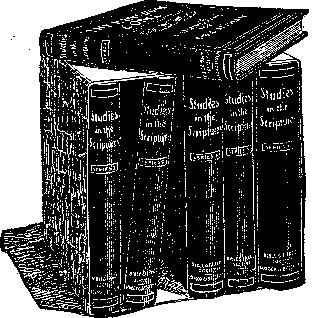

Vol. VIII.
NEW YORK CITY
No. 6.
The Most Precious Text
"For. God 30 loved the world, that he gave his him should not perish, but hav
fJtHE first thought connected with this text, dear friends, is the peculiarity of the fact that the God of all grace, the Almighty, the All-Wise, the All-Just, should have love for the world of mankind. It would surprise mone of us if the Apostle had written that God greatly loved the holy angels and that he would do any and everything for their protection and blessing. We would have said, “It is just like htm. Of course he would do gso. They have always been loyal, al-, ways been true. They are noble images of himself in character.” If the statement had even been that God so loved his saints—that, 'blemished by the Imperfections of the flesh, he had accepted them through the merits of Jesus’ sacrifice and counted them as perfect and entire in him—this would have caused greater surprise than God’s love for the angels. And yet we would have said, “Yes,• it is just like our heavenly Father to be abundantly gracious and to remember the sins and Iniquities no more against those who have fully turned to righteousness and by faith have been covered by the Redeemer’s Robe of Perfection.”
"Condemned Sin in the Flesh”
If our text w^re the only -one of Scripture to the contrary (but it is uot), it would be an utter refutation Of the blasphemous doctrine of eternal torment as the Divine purpose toward mankind. The thought that God created our race with the foreknowledge and pre-arrangement that the overwhelming majority (all except the saintly “elect”) must spend an eternity of hopeless torture, is thoroughly out of accord with reason, as well aa contradictory to our text, “God so loved the world.” Does love plan torture? Does loving provision not imply wisdom in the use of power, that the creature may not be injured, if he Shall not be benefited by the program? Is it conceivable that he who commands us to love our enemies and to Observe toward them the Golden Rule Would himself ignore that Rule and injure, not only his enemies, but also the ignorant, the superstitious, the great masses of mankind—of whom the Apostle declares, “The god of this world hath blinded their minds?”—2 Cor. 4:4.
Let us have done with such nightmares, such “doctrines of demons,” as the Apostle styles them. Let us begin to know our Creator, our heavenly Father, for such knowledge is a step toward love for him, and hence toward life eternal for ourselves. It was our dear Redeemer who said, “This is life eternal, that they might know thee, the only true God, and Jesus Christ, whom thou hast sent.” (John 17:3.) Not only the world perishes because of lack of true knowledge of the Creator, but many of God’s people are similarly Jilndered. As the Scriptures declare, -,My people are destroyed for lack of knowledge.”—Hosea 4:6.
It should be understood by all that God’s love for mankind, as well as Divine Justice and Wisdom, prepared man’s penalty—“The wages of sin is death” (Romans 6:23). It is in full harmony with this that we know that the Lord drove our first parents out <ot the Garden of Eden and placed the cherubim with flaming sword to prevent their return thither. It was a merciful provision, because had they continued to have access to the trees cf life and thus to continued existence, It would have meant everlasting life for sinners. And to give sinners eter-aal life and to perpetuate a condition only begotten Son, that whosoever believeth in ! everlasting life.”—John 3:16.
of sin, rebellion, anarchy, in the universe to all eternity would have been discreditable to the Divine Character and Government, as well, as injurious to his creatures. God’s determination, therefore, from the very beginning was that he «ould have a clean universe, and hence the law, “The soul that sin-neth, it shall die”—a law which ultimately must prevail as respects the fallen angels and Satan, as well as in respect to mankind.
Thus we have the assurance that ultimately nothing shall mar the harmony of the universe. What the Scriptures point out respecting the future will prove true. “And every creature which is in heaven, and on the earth, and such as are in the sea, and all that are in them, heard I saying, Blessing, and honor, and glory, and power, be unto him that sitteth upon the throne, and unto the Lamb for ever and ever” (Rev. 5:13). Thus the time will come when sin and all who love sin will be destroyed and when, as a consequence, the Scriptures assure us, “There shall be no more death, neither sorrow, nor crying, neither shall there be any more pain; for the former things are passed away. And he that sat upon the throne said, Behold, I make all ibhigto 5. ' ■
"That He Gave His Son”
God’s love for sinners, as we have seen, was so great that he would not allow them to have everlasting life, because that would mean to them everlasting imperfection and sorrow, etc. But our text tells us of a still further step that the Lord took—and hence shows a still further love.
“He gave his only begotten Son.” How? When? Where? What for? We answer, He did not give his only begotten Son to suffer eternal torment for us. Thank God, No! Yet, if eternal torment had been the sinner’s penalty, God’s Son could not have been their Redeemer, except by paying that awful price. As we have seen, however, the penalty was not that, but a death penalty—“The soul that sinneth, it shall die;” “Dying thou shalt die;” “The Wages of sin is death.” God gave his only begotten Son to die for our sins that he might bring us back to God. Our Lord’s death on Calvary was the sufficient price for the sins of the whole world, although he did not apply that price directly to the world, but to believers of this present time; and, indirectly, through the consecrated believers, the Bride of Christ, it will be applied to mankind in general, thus permitting the Church class to “fill up that which is behind of the afflictions of Christ,” and to share with him in the sealing of the New Covenant for Israel, and through Israel for the world. “Behold, the days come, saith the Lord, that I will make a New Covenant with the house of Israel, and With the house of Judah.”—Jer. 31:31.
Left the Heavenly Glory
Nor should we understand that God .compelled his only begotten Son to die for us, but rather, as the Scriptures inform us, he set before him a great prize, so that Jesus counted it all joy to lay down his life that he might be the heavenly Bridegroom to the Church and be the Mediator of the New Covenant for Israel and the world of mankind. How wise, how just, are God’s arrangements! Though he possesses all power, yet he would not infract the rights or liberties of even the most humble of his creatures, much less the rights of his only begotten Son, our Lord.
The Scriptures inform us that it was In accord with the Father’s arrangement and the giving of his Son that he made to him the proposition to become man’s Redeemer and uplifter and the Head of the Church, to receive glory, honor and immortality. It was in view of this proposition as a whole that we read of our Lord that he, “For the joy that was set before him, endured the cross, despising the shame, and is set down at the right hand of God” (Heb. 12:2). Again, “Who gave himself a ransom for all, to be testified in due time” (I Tim. 2:6). He left the heavenly glory and took upon him the human nature and, as the man Christ Jesus, gave himself as the Ransom for all.
Whosoever Believeth in Him
God’s love is not only large and broad, but it is also deep and high. In blessing mankind he purposes the largest blessing possible in the wisest manner. He will not justify the heathen in their ignorance nor justify willful rebels. He limits his favor by two conditions:
First.—The blessing through his Son shall go only to those who intelligently know of it and by faith accept it.
Second.—It shall be available only to those who desire to come into harmony with Divine laws as obedient children.
This presents a difficulty to our minds until we come to understand what' the- Scriptures call the Divine Plan of the Ages. Until we understand that Plan, we are Inclined to find fault with the Divine arrangement and with ourselves and with fellow-Christians and generally to be uncomfortable and disappointed in proportion to the largeness of our hearts and our interests in God’s character and in humanity. We find fault with ourselves and others that the world has not long ago been evangelized and made acquainted with God. We find fault with God that he is allowing the heathen to go down into death at the rate of ninety thousand per day, with no knowledge of the “only name under heaven whereby we must be saved.” We squirm and twist in our reasonings in trying to justify this course and are still further harassed by the horrible nightmare of eternal torment, which teaches that the heathen not only do not get eternal life in glory, but that they do get eternal life in misery.
Alas, how true are the Lord’s words through the Prophet, “Your covenant with death shall be disannulled, and your agreement with the grave shall not stand. From the time that it goeth forth it shall take you; for morning by morning shall it pass over, by day and by night; and it shall be a vexation only to understand the doctrine.”^—Isa. 28:18, 19.
Th® Plan of the Ageo.
•The key to the whole Mystery is that God first selects from amongst mankind a special class of those able and willing to exercise faith in him, to receive the Spirit of Christ, and to demonstrate their loyalty by walking in his steps. These, he tells us, he is calling out of the world by what the world calls the foolishness of preaching. These he is testing as respects their faith and loyalty and using the trials and oppositions of this present time as chiseling processes and burrs to shape and polish and prepare the precious stones for their glorious setting in the heavenly Kingdom. There are not many of these altogether. “Fear not, little flock; for it is the Father’s good pleasure to give you the Kingdom” (Luke 12:32). They are being selected out of all denominations, kindreds and tongues, and amongtt them are not many great, wise, noble or rich. They are chiefly the poor of this world, rich in faith, heirs of the Kingdom.
This “little flock” of "saints,” this “royal priesthood,” with Christ their Redeemer, their. Lord, their Bridegroom, their Head, their Chief Priest, are to constitute the Kings, Priests, Judges, Rulers of the world of mankind. . Then in the age to follow this one, in the Millennium, God’s time shall come for dealing with mankind as a whole. In co-operation with ths Kingdom work will be the binding of Satan and every evil influence amongst men, and the letting loose of every good influence and every helpful truth.
This is God’s provision for the world of mankind, whom he so loved. Not merely for the saints, who already have the hearing ear, the seeing eye, and the appreciative heart, is God’s loving provision, but for poor, degraded humanity, which, through centuries of sin, has almost entirely lost the image and likeness of its Creator. The promise for these is that they shall be privileged by resurrection processes to return to full harmony with. the Lord and to repossess th® blessings and favors lost by Father Adam when he sinned—blessings and privileges redeemed for Adam’s rac® through the merits of our dear Redeemer’s sacrifice at Calvary.
Believers Might Not Perish
Notice how the various features of our text intermesh with each other, like the cogs and pinions of a well-fitted machine! Let us get r*d • wrong thought that so long'has befogged our reason and robbed our hearts of the proper reverence for our Creator! . Let us get rid of the thought that 'perish” means to preserve in eternal torture, thus confusing the minds of the Lord’s people and the world to the true teachings of the Scriptures. Perishing, of course, means perishing ——to lose life, to become extinct. Man, originally made in God’s image, was prepared for eternal life; eternity was to be his destiny. But sin forfeited those life-rights. He came under a sentence of death—that he should perish like the brute beast. Hence, his only hope of a future life is in the Redeemer and the resurrection which his sacrifice has secured.
God's Provision
Man’s intelligence and higher organism could avail him only on condition that they would be used in harmony with his Maker’s reasonable and just requirements. Otherwise he must die the death, as being even less worthy of prolonged existence than th® brute. Note how our text points out that God saw that in the race of Adans there would be many who, if they understood. the light and the Truth and had it in contrast with the wrongs would be glad to return to harmony with God—glad to accept of Christ and Restitution privileges and blessings, and to come into full accord with th® Almighty and with Jesus, and to have back again the life-rights forfeited by father Adam. Hence God’s provision! for the race as a whole—that they might not perish as the brute beast, but attain to eternal life again, attain to all that was lost in Adam, all that was redeemed by Jesus Christ our Lord—eternal life, fellowship with God the Father and the Son and communion with the holy Spirit.
“God moves in a mysterious Wly His wonders to perform.”
These words of the poet are wonderfully true! Truth is, indeed, stranger than fiction! The Divine Plan for human salvation is higher and deeper, longer and broader than any of us dreamed of! Yet it is most exact;! nothing about it ir, slip-shod or irregular. While the blessed privileges of reconciliation will be granted to all of Adam’s race, they will be forced ujten. H'Qfle,
THE BIBLE STUDENTS MONTHLY
W. F. HUDGINGS, Editor.
13, 15, 17 HICKS ST., BROOKLYN, N.Y.
Monthly—12 cts. a year. Single cop es, 1c.
An Independent, Unsectarian Religious Newspaper, Specially Devoted to the Forwarding o£ the laymen’s Home Missionary Movement for the Glory of God and Good of Humanity.
Ministers of the I. B. S. A. render their services a® funerals free of charge. They also invite correspond-* encefrom those desiring Christian counsel.
Secretary of State Knox, in concluding a stirring address before the graduating students of the University of Pennsylvania, spoke as follows: “We have reached a point where it is evident that the future holds in store a time when wars shall cease; when the nations of the world shall realize a federation as real and vital as that now subsisting between the component parts of a single state; when by deliberate international conjunction the strong shall universally help the weak, and when the corporate' righteousness of the world shall compel unrighteousness to disappear and shall destroy the habitations of cruelty still lingering in the dark places of the earth. This is , ‘the spirit of the wide world brooding or things to come.’ That day will be the Millennium, of course; but in some sense and degree it will surely be realized in this dispensation of mortal time.”
Will there be any danger that at some future time sin may again invade the world, again degrade God’s human representatives and obscure the glory of the Divine creation? We answer, no, never. The guarantee of this is in the Lord’s words that there shall be no more death. So surely as there will be sin, the penalty of sin must follow it, hence the guarantee that there will be no more dying, is the guarantee that there will be no more sin. But how can this be guaranteed and at the same time man’s free moral agency be preserved? The Scriptures give the explanation, telling us that at the close of the Mediatorial Kingdom, when "Messiah shall have accomplished his ■work of putting down all opposition and bringing all the willing and obedient up to perfection of human nature, then he shall deliver up the kingdom to God, even the Father. The next step in the Divine program as outlined in the Revelation is that the world, no longer under the Mediatorial covering of the Redeemer and no longer needing such a covering because perfect, will be subjected by the Father to severe tests of their love and loyalty, their obedience, similar to the test which came upon father Adam in Eden, when he was perfect.
The description of Revelation is that Satan will be loosed to tempt and deceive all the people whose number will then be as the sands of the seashore. What proportion he will succeed in deceiving is not intimated, but the general statement is made that all those who are deceived by him in that crucial test will be utterly destroyed with Satan in the Second Death, which, symbolically, is represented by the “lake of fire.” This will leave a clean Universe as represented in the Scriptures, and "every voice in heaven and in earth and under the earth will be proclaiming praise, honor, dominion, might and power to him that sitteth on the throne and to the Lamb.” Blessed are our eyes and our ears and our understanding hearts which are already enlightened in advance of the world, that have already learned of the glory of God. We with the seraphim proclaim, “holy, holy, holy, Lord God Almighty,” and we rejoice that the time is near at hand when the whole earth shall be filled with his glory.
Thieves in Paradise
Luke 23:43.—This greatly misunderstood text explained in a recent issue of The Bible Students Monthly.
Send post card for free sample.
The Savior of the World
“Behold, I bring you good tidings of great joy which shall be to all people; for unto you is born this day in the city of David, a Savior, which is Christ the Lord.”—-Luke 2:10-14.
^|T matters not that December 25th is Wnot the real anniversary of the Savior’s birth, but probably the anniversary of the annunciation by the angel Gabriel, the anniversary of the Virgin Mary’s conception, our Lord being born nine months later on the calendar, or about October 1. One so great, whose birth, death and resurrection from the dead mean so much to the human family, may be remembered and celebrated any day, every day,, by all those who appreciate what he has done for our race. Since, then, the majority of Christian people have become habituated to the celebration of December 25 as our Lord’s birthday, we need make no protest, but join with all in celebrating that day with rejoicing of heart, giving gifts and remembrances one to another, thus copying Divine favor, which gave to mankind the Son of God as a gift of mercy and love for our redemption.
For four thousand years and more the promise of God, clothed in more or less of obscurity, had been given to mankind, intimating that ultimately the great curse of sin and death, which had come upon the world through Father Adam’s disobedience in Eden, would be rolled away, and instead of a curse (a blight), would come a blessing of the Lord with life-giving refreshment. In various types, figures and shadowy promises this lesson had come down through the ages to the time of our Lord’s birth, especially among the Jews, who were the Divinely favored and covenanted people. And since the Jews were of a commercial spirit many of them were to be found in all parts of the civilized world; and thus among every people the faith in the one God and the hope of Israel through a Messiah was more or less made known, so that at the time of our^Lord’s birth we read, “All men were in expectation” of a soon-coming Messiah. Doubtless this expectation was built upon the interpretation of Daniel’s prophecy, which we now see clearly marked the year of our Lord’s..majority, when, he was 30 years of age, and made his consecration to his work and received the begetting of the Holy Spirit, his anointing as the great antitypical High Priest and as the great antitypical King over Israel and the world.
From Bethlehem to Nazareth
In olden times there were honorable cities and mean cities. Nazareth was generally recognized as one of the latter, while Bethlehem was distinctly one of the former—the city of David, Israel’s beloved King. The Scriptures explain to us that Mary, our Lord’s mother, and Joseph, her husband, were both of the lineage of David, and that in a seemingly accidental manner, the prophecy was fulfilled which foretold that Messiah would be born in Bethlehem.—Micah 5:2.
The Roman Empire at that time bore rule over the whole world, the Jews being subject to it, but waiting expectantly, restlessly, for the coming Messiah, who would deliver them from being subject people and make of them the ruling caste of his Kingdom, the dominion of the world. Rome’s great Emperor, Caesar Augustus, was in power at this time, and had sent forth his decree for a polling or census of the whole world for purposes of taxation, etc. Luke informs us that it was in response to this royal decree that Joseph and Mary went up to their native city to be enrolled, and that thus it was that Jesus was born in Bethlehem, and on account of the great concourse of people at the time and for the same purpose, accommodations being scarce, the stable of the inn, or khan, was used by some as a lodging. Joseph and Mary, being of the late comers, were forced to occupy these humble quarters, and thus it was that the King of Glory, whose Kingdom is by and by to rule the world, was in the time of his flesh born in a stable and cradled in a manger.
The Angel's and the Shepherds
Noble shepherds those must have been to whom the Almighty sent the angelic message respecting the birth of Jesus, the Messiah, the message which has come down through the ages and has reached our ears—the message which thrills us the more in proportion as we are able to grasp its meaning. First a single angel appeared to the shepherds and allayed their fears, saying: “Fear not; behold I bring you good tidings.” It would appear that fear is one of the dominating impulses of the human mind, especially in conjunction with any revelations from the Lord. The same is true today with all except the comparatively few who are well informed respecting the Divine character and plan. Thus the subject of religion is obnoxious to the world in general—a subject which they prefer to avoid because of a feeling of guilt and a dread of further knowledge of condemnation.
/‘Good tidings,” is another translation of our word Gospel. How beautiful the thought that the Gospel is really and truly good tidings! Alas! for the misrepresentations of God’s plan, under which so many of his true people misunderstand his character and his Word and apply the term Gospel to their various messages from the dark ages, teaching purgatory and eternal torment as the portion of the race. Let us get away from this false thought and get the truth that the Gospel is good tidings. The angel elaborated, saying that his message was “good tidings of great joy, which shall be unto all people.” Ah, thank God, his plan is wider and deeper and higher and grander than anything we had ever conceived. The Gospel message is not merely to be good tidings to the comparatively few that now have ears to hear and eyes to see its beauties, but in God’s due time it is to be good tidings of great joy to all people.
The Cause, the Logic, of the Message
The message took cognizance of the fact that it was to reasonable people, who would want to know why the unchangeable God, who had once pronounced a curse, should at any time so amend and alter matters as to sup-plant- -the-^ eurse-withr-^r-^blessing. - The messenger states the philosophy of the Divine Plan. “Unto you is born this day a Savior, which is Christ (Messiah) the Lord.” There we have the key to the entire Gospel statement of how God could be just and yet now be the justifier of sinners who accept Jesus. The word Savior here signifies life-giver, and how beautiful is the thought that as death is the wage of sin, the curse upon the race, this Messiah who was born is to be the one who will rescue the race from the sentence by giving them life again. The explanation of how he would give life was not given, nor was it necessary at that time; but now, in the light of developments, and with the explanations furnished through the Spirit, in the New Testament, we see how our Lord’s voluntary sacrifice of his life, dying the just for the unjust, settled the claims of Divine Justice against Adam and thus incidentally against all who shared his sentence.
A Prophecy of Good Things
Yes, the angelic message was a prophecy of good things to be accomplished for the Church and the world during the Millennial Age. The Church is to have the first blessing. The first resurrection is to be composed only of the blessed and holy who shall live and reign with Christ during the millennium, the thousand years in which Satan shall be bound, and when the good influences of truth and righteousness shall enlighten the whole earth. The declaration of the Scriptures is that the deliverance of the Church will come early in the morning of that Millennial Day, as the prophet declares, “God will help her early in the morning.”—Psalm 46:5.
It will be during the Millennial Age that this prophecy of the angel will have its fulfilment, and the great Savior who has already redeemed us by his sacrifice will stand forth as the King, the glorified Messiah, and establish his dominion of righteousness in the world for the blessing and uplifting of every member of the race. In harmony with the words of the Apostle, those will be “times of refreshing,” “times of restitution of all things spoken by the mouth of all the holy prophets since the world began.” (Acts 3:19-21.) If the Lord had based the hope of the world upon some works of merit or righteousness of the world’s doing, then, indeed, we might have feared—indeed, the more we know of the world the less hope we would have. But, on the contrary, the Lord has based the entire proposition for the future blessing, not upon our worthiness, but upon the worthiness and sacrifice of his. Son. “To you is born a Life-Giver, which is Messiah, the Lord.”
-WHERE ARE THE DEAD?”
This sermon was published in Bible Students Monthly, Vol. 5, No.3. The interest aroused and the great demand for copies of this sermon have been remarkable. A sample copy will be mailed to any one free.
The Angels’ Song
It was after the giving of the message of good tidings of great joy by the heavenly one that a host of angels appeared to the shepherds, saying, “Glory to God in the highest, and on earth peace, good will to men.” This, too, is a prophecy. It has not yet been accomplished, but will be fulfilled in every particular in God’s due time, which, we believe, is now nigh, ever at the door. Not yet does God receive glory in the highest, not yet is there peace among men. Quite to the contrary. God’s name is blasphemed, not only by those who vulgarly and in ribald jest take the Divine Name in vain, and not merely by the heathen who worship devils and think they are gods, but even by Christian people, God’s name is blasphemed every day. For be it known that blasphemy is any dishonorable misrepresentation of the character of another. God be merciful to us, but at some time or other doubtless everyone of us here present blasphemed the holy name in this manner —by misrepresenting the Divine character and Divine Plan, by picturing the God of love and mercy and justice and truth as the originator, the planner, the perpetuator of the eternal torment of the great mass of his creatures, born in sin and shapen in iniquity, born’ to sin as the IsparWtb' fly upwards.
But the Lord had mercy upon us because we did it ignorantly. And we also should have compassion upon others who still ignorantly misrepresent our God, and our energies should be continually bent to their assistance, that the eyes of their nmderstanding might open more widely to perceive the lengths and breadths and heights and depths and know the love of God which passeth understanding.
Noting that peace on earth and good will to men have not followed the Savior’s birth thus far, and in discerning that this is a prophecy of what is to be accomplished during the existence of the Messianic Kingdom, many have been inclined to change the translation of this verse so as to have it read, “On earth peace among men, in whom he is well pleased.” But even by thus changing it the statement would not be true, for even the Lord’s people have no peace on earth. Whatever peace they have is in their hearts, and based upon their faith in the Lord and in the glorious things which he has promised. Our Lord himself and the Apostles testified to this, assuring us that whosoever in this present time would live godly should suffer persecution, that a man’s foes would be they of his own household, etc. (2 Tim. 3:12; Matt. 10:36). Let us not confuse ourselves nor abridge the testimony of the Word, but with the eye of faith look forward to the day of Christ, in which all these glorious things shall have their fulfillment, in which peace shall indeed fill the whole earth with the knowledge of the glory of the Lord, bringing Divine favor and rolling away the curse from the entire groan- . ing creation, as pointed out by the Apostle.—Rom. 8:22.
Earth to Be Filled With God’s Glory
"The glory of the Lord shall be revealed and all f.esh shall see it together.”—Isaiah 40:5.
WHILE it is quite true that the heavens declare the glory of God H and the earth showeth his handiwork, it is also true that but few appreciate these facts. Few see the glory of the Lord, few see the glory of the sun and moon and stars, and their wondrous harmonies of movement and relationship. And while the earth shows God’s handiwork and his provision for the necessities of all his creatures in hill and valley and plain, grain, fruit and flower, beast, bird and man, the great majority of the race accept divine blessings daily with but little appreciation — with but little thankfulness. The majority, as the Apostle declares, are “blind and cannot see afar off.”—2 Peter 1:9.
Nor need we wonder that it is only those who have the eyes of faith, only those whose eyes of understanding have been opened, who can appreciate the divine glories and benefits at the present time. When we look around us and see that sin and death are reigning, that their sting has blemished every pleasure, every joy, every beauty, the natural inquiry is, Why does not the Creator of the Universe rule amongst the children of men, overthrow Satan and sin and death and all their train of evils, and give to God’s creatures such blessings as might naturally be expected from such a beneficent Creator and Father?
,A satisfactory answer comes to us from but one direction—the Bible. True, infidels and higher critics generally tell us that nature is our God and Creator and is without sentiment, is merely an operation of laws which ignore man’s noblest sentiments of justice, love, mercy, etc. But this answer is not satisfactory to the reasoning mind, which feels assured that the Creator cannot be inferior to, but must be the superior of the created being. Hence, reason tells us that he who formed the eye sees even better than we; he who formed the ear hears better than do we; and he who gave us -qualities of - heart and mind has the same on a higher and more complete plane; that at the very most we were merely made in his image; and here the Scriptures step in and assure us that all this is true, but that we have lost much (some more and some less) of the Divine likeness through the fall, through sin and its penalty—• '“dying thou shalt die.”
Weeping Endures For the Night
The Lord, speaking to us through the prophet, comforts us with the thought that “weeping may endure for a night, but joy cometh in the morning” (Psalm 30:5). The era of the reign of sin and death is thus figuratively spoken of as a night time, a dark time, when the Sun of Divine Righteousness and glory does not shine upon the human family—when only the reflection of his glory may be seen in the stars of hope and the moon of the Mosaic Law. It is in harmony with this that other Scriptures assure us that darkness covers the earth—the most enlightened of the human family—and gross darkness covers the people, the heathen.—Isa. <0:2.
As the poet has expressed it, the human family are “like children crying in the night.” With the morning sun will come the termination of all our troubles, our sorrows, our crying and our dying, “for the mouth of the Lord hath spoken it.” The morning of the New Dispensation, the Millennial Morning, will be ushered in, the Bible assures us, by a great time of trouble, & great thunder storm, from behind which the Sun of Righteousness shall arise with healing in its beams, to flood the whole earth with the light of the “knowledge of the Lord as the waters cover the sea.”—Isa. 11:9.
These various Scriptures indicate that the knowledge of the Lord is to come in the Millennial Age, that then the tears will be wiped from off all faces; that then the Lord’s blessing and uplifting influence will be with every creature; that then the darkness will be over and the. true light will shine, .the S'un of Righteousness.
All these and many more Scriptures imply what we know to be the case, that the knowledge of the Lord does not prevail now, that the glory of the Lord is not now seen, that the tears of humanity are not now wiped away. Whoever believes this Scripture looks forward to a glorious coming day, the Golden Age. Whoever doubts this testimony, viewing it from the standpoint of the higher critics, loses the power, strength and help which he might have through its acceptance. Let us learn more and more to take the Lord at his word and thus have more of his joy, his peace and his love shed abroad in our hearts, because of having the true hope built upon the sure foundation of Divine testimony.
God Bless the Missionaries
Our hearts go out toward those who have consecrated their lives as missionaries to carry the message of Divine truth and grace to the twelve hundred millions of heathendom. We are glad to know through missionary reports that a few here and there become Christians, and that many children are gathered into schools where they are taught various branches of useful knowledge. But no reasonable mind can hope that all the efforts—if doubled, if trebled, if multiplied ten times—would accomplish the desired results and blot out the darkness and fill the earth with the knowledge of God. On the contrary, we see that tne number of heathen is today twice as great as it was a century ago—six hundred millions then, twelve hundred millions now. We see further that the four hundred millions accredited as •Christians in such statistics include so many goats, so many wolves in sheep’s clothing, and so many ring-streaked and speckled sheep as to contradict the thought that Christendom is the ideal to which the Lord intends to bring humanity. Indeed, we may feel sure that if all the missionaries werei to be called home and a thorough-going work attempted among., the four hundred million professed Christians, the results would still be unsatisfactory.
The church does not possess the power to more than gloss the fallen human nature—to more than partially civilize the masses of the people. The great and deep truths which the Redeemer taught respecting the “narrow way” and self-sacrificing conditions arranged for his followers in the present time, are now appreciated only by a mere handful of the race. These alone see the glory of the Lord as in a mirror, in the Word, by faith—they “walk by faith and not by sight.” To these alone, therefore, comes any measure of appreciation of the Divine glories and blessings. Of these alone the Lord speaks, saying, “Tlie secret of the Lord is with them that fear (reverence) him, and he will make them to understand his. Covenant (promise).” (Psa. 25:14.) To these alone, therefore, is displayed even the reflection of the coming glories in the promises of the Scriptures, which they see and appreciate with the eye of faith. Actually, the glories of the Lord are not revealed to mankind.
The Promise of Our Text
Our text declares that “the glory of the Lord shall be revealed, and all flesh shall see it together.” Here is an admission that the glories are not yet revealed as well as a promise for the future revelation, and that future revelation is not merely to be for the church in glory, but for the world— for all. Neither will it be, as some of our pre-millenarian brethren think, merely for those who shall be so fortunate as to live when the glorious Millennial epoch shall be ushered in. On the contrary, it shall be unto all
Ths Hops if Immortality rpHIS subject, which has been so A misunderstood, is convincingly and Scripturally treated in a recent issue of The Bible Students Monthly.
Send post card for free sample. flesh, which will include those who have gone down into the prison house of death, the tomb, sheol, hades, during the past, and of whom the Lord declares, “All who are in their graves shall hear the voice of the Son of Man and shall come forth.”—John 5:28.
Of course, it was possible for the Lord to have revealed his glory at any time in the past, but the Scriptures inform us that this was not the Divine purpose; that God chose rather to allow the night of weeping and sin and death to give to the world of mankind an experimental lesson on the exceeding sinfulness of sin, as well as to give to the holy angels an object lesson along the same lines, without prejudice to any, but in the interest of all, to cause the light of the knowledge of his glory to fill the whole earth.
The glory of the Lord will not be seen by all flesh during the present Age—not until the New Dispensation shall remove present blindness and display to the world the love which God bore for us all as exemplified in his great gift, his Son, and the provision made for our recovery from sin and death through him by his resurrecting power. By and by, when not merely the justice of God, but also his love has been manifested, his power will also be manifest in the overthrow of Satan and in the arrangement of all the affairs of the New Dispensation in favor of Adam and his race, in assisting them up out of their degradation and death back to all that was lost in Eden. Finally, the wisdom of God will be seen in having permitted sin, and evil, and death and all the train of connected woes. It will be seen that it was wise to do so as a great lesson for man and for all creation. Thus will the glory of the Lord be revealed, and all flesh shall see it.
God's Footstool to Bo Glorious
The Lord declares, heaven to be his throne and the earth his footstool. He has informed us respecting the glory of heaven, and we know of the disorder, darkness, trouble and sin in the earth—prevailing throughout God’s footstool. Do we wonder that he allows his footstool to be thus out of accord with himself, his righteousness, his power, his wisdom, his love, his justice? If so he gives ns the assurance that at the second coming of Christ “he will make the place of his feet glorious.” (Isa. 60:13.) This is in full accord with all the other testimonies on the subject of the great work of the Lord Jesus in the earth— the restitution promises to begin at the second coming. (Acts 3:19.) All are to lead up to and finally accomplish the renovation of the earth, of God’s footstool, to make of it a paradise of God as promised, to restore mankind once more to his original position of king of earth, subject to his Heavenly King.
Let us not forget that while Divine glory will be manifested in the perfections of earth, its fruits, its flowers, the beauties of nature, etc., yet the grandest exhibition of Divine glory will be in mankind himself. To appreciate this we must remember that God created man in his image and likeness and for his glory. We must remember also that it is written of our race, “All have sinned and come short of the glory of God.” God’s glory in us as a race has been blemished; we no longer as a race properly reflect the Divine image and likeness. In harmony with this we can see that all the work of restitution, all the blessings coming to the earth in material ways, would not fully show forth the glory of’the great Creator so long as man, his chief handiwork, would be imperfect, blemished. Hence the grandest feature of restitution held out before us pertains to mankind himself. The return of humanity to its former estate of the Divine likeness will be the crowning climax of the Divine Plan, set in operation when man was created by Jehovah, who, we are assured, is working all things according to the counsel of his own will.—Eph. 1:11.
The King of Glory
The titles of this great King of glory who is to accomplish so great a work are full of satisfaction; he is to be the “Prince of Peace,” the “King of Righteousness,” the “Judge,” the “Everlasting Father” to the race; and his obedience to righteousness, to the Father’s will, and his love for humanity, was exemplified in his sacrifice as our ransom price. All these assure us that the wonderful powers committed to his care and exercised by him during the Millennial Age to effect this return of Divine glory to the earth, will be exercised in full harmony with all the principles of love which he has already so richly manifested in his dealings with our race.
Through the prophet the Lord gives us the message respecting Messiah and his work—“He shall not fail nor be discouraged until he shall have established righteousness in the earth.” (Isa. 42:4.) Our Redeemer’s sojourn with our race in the valley of the shadow of death and his sufferings, demonstrated his faithfulness—he did not fail, he was not discouraged In harmony with the Divine will, the church, his espoused Bride, continually under his guidance, when called to walk in his steps and to suffer for their loyalty to the truth, by his grace shall neither fail nor . be discouraged —an elect company of them, all overcomers, more than “conquerors,” will eventually be found. Then all these together, the jewels of the Lord gathered to himself, will shine forth in the Kingdom as the glorious Sun of Righteousness for the healing and restoring of all the families of the earth. (Matt. 13:43.) A picture of this future work of establishing righteousness in the earth—abolishing sin and death by the uplift of the human family out of these—is given us in the symbols of Revelation. There the glorified, elect church, changed to spirit conditions, is pictured as the heavenly Jerusalem, in the midst of which is the throne of God’s glory. “God is in the midst of her.”—Psa. 46:5; Rev. 21:2, 3.
The symbolical picture shows a river of life flowing from the Throne, and on its either bank grew trees whose leaves are for the healing of the nations, while the spirit and the Bride glorified say to all the families of the earth, “Come and take of the water of life freely,” and “whosoever will may come.” (Rev. 21:1, 2, 17.) In proportion as any will fall into line with the righteous laws of the Kingdom and into loving obedience to the great King, in that same proportion will he be drinking of the water of life provided by the great Life Giver—in that same proportion will he be rising out of his condition of sin, imperfection and dying, up and back to all that was lost by father Adam.
Send post-card request to the zk <»> editor for free copies of this paper.
& Some of the interesting subjects X you may have for asking, are:
v Spiritism, Mormonism, etc., their x’
T Mysteries Explained.
X Card. Gibbons on Church Unity.
X Do you believe in the Resurrection?
X Is Christian Science Scriptural?
X Clergy Ordination Fraudulent.
X Distress of Nations preceding Ar-
God’s Message to the Jews.
<» Great Prophecy of Matt. 24.
God’s Law Universal and Eternal. <S> I Thieves in Paradise.
The Handwriting on the Wall. ■€> Great Pyramid a Divine Oracle.
Philosophy of the Deluge.
What is Baptism?
Fire and Brimstone Repudiated. v Purgatory Fires not Now but Soon I v Emp’r Constantine Trinity-Maker. X The Law of Retribution. X
Rebel Satan Doomed to Death. X Sheep and Goats Parable.
Ancient Garden of Eden.
Some Foreign Mission Facts. <•> How Jesus Preached to the Spirits X in Prison.
Social Conditions beyond Human Control.
Thousand-Year Day of Judgment, x? Existence of a Supreme Intelligent x* Creator Established. V
A Great Prophecy Nearing Fulfil- x ment. x
PASTOR RUSSELL’S STUDIES IN THE SCRIPTURES.
The set of six volumes, cloth, 3,000 pages, is supplied by the BIBLE AND TRACT SOCIETY, No. 17 HICKS ST.„ BROOKLYN, N. Y., for the usual price of one such volume, viz., $3.30 prepaid.
“The Kingdom of God is not meat and drink, but righteousness and peace and joy in the Holy Ghost."—Rom. 14:17.
“The words'that I speak unto you, they are spirit, and they are life."—John 6:63.
jjuET us keep in memory that the V4 Master’s parables of the Kingdom of Heaven relate to the class of people whom he is calling out of the world of mankind to be associated with him in his Mediatorial Kingdom soon to be inaugurated. Let us remember that sometimes this class is spoken of as including, nominally, not merely the saintly, the wheat class, but also, to some extent, the tares, as shown in our study of last week. These different parable-pictures represent the same subject from different standpoints, just as we take a photograph of a building from the north, the south, the east and the west, internally and externally.
Like a Grain of Mustard Seed
As. a mustard seed is very small, yet produces a large bush, so that the fowls of the air may lodge in its branches, so this illustrates how the Gospel of the Kingdom would, from a small beginning, attain to a considerable size. Its size would not be great among the trees, but great among bushes or herbage. Thus the message of Christ received vtt first only by the poor and the few of Israel, has finally grown to such important dimensions that the fowls like to gather in its branches. But let us remember that the fowls, according to our Lord’s interpretation of a previous parable, represent the servants of the Wicked One.
So then the teaching of this parable would lead us to conclude that the Church of Christ, at one time, was so unimportant in the world that it was a shame and a dishonor to belong to it, but that ultimately it would become honorable and great and the Adversary’s servants would have pleasure in its shade. This development the Scriptures represent as being Babylon, declaring that, as a whole, with the various branches and denominations, the nominal Church of Christ is Babylonish. Hearken to the Lord’s words: “She has become the hold of every foul spirit and the cage of every unclean and hateful bird.” (Rev. 18:2.) The intimation is that there is a large outward development of Me- Church which, is not to her advantage and glory but contrariwise. Nevertheless, this is, nominally, the Church of Christ. However his spirit may have been misrepresented and there may have been an improper development, ultimately the great Head of the . Church will bring order out of chaos and confusion and will glorify and use his “elect.”
“Leaven Hidden in the Meal”
The parable of the “leaven” (V. 33) illustrates the process by which, as foretold, the Church would get into the wrong condition. As a woman would take her batch of flour for baking and put leaven (yeast) in it and the result would be that the mass would become leavened, so it would be with the Church of Christ; the food of the entire household would become leavened or corrupted. Every portion would become more or less vitiated with the leaven of false doctrines which would permeate the entire mass. Thus today nearly every doctrine inculcated by Jesus and his Apostles has become more or less perverted or twisted by the errors of the dark ages.
Treasure Hid in a Field
The desirability of obtaining jointheirship with Christ in his Messianic Kingdom, is pictured in the parable of “the treasure hidden in the field.” The finder, realizing its value, desired it for himself and had such faith in it that he disposed of all his property in order to buy that field, which he believed to contain the precious treasure. Only those who will appreciate the Gospel message will gain its glorious promises. If we love the present life with its joys and prospects, its hopes and ambitions, then we will labor for these, but if we intelligently hear and, by faith, believe the Gospel offer of this age of a share with Christ in his Mediatorial Kingdom, then in proportion to our faith and appreciation will be our self-sacrificing zeal to attain that prize. Whoever believes the message of the Kingdom will find his faith an Inspiration, indeed a necessary inspiration, to the attainment of the prize, for it will cost all that he has of earthly blessings; and unless he has faith that he will find the prize, he will surely be unwilling to sacrifice all he has for it.
The field belongs to God. He has put the treasure there. He offers it for sale to any willing to pay the price. The buyer is the Lord and those who accept his invitation to join with him in the sacrifice of their earthly interests that they may be sharers with him in his heavenly glories—in the work of the Age to come, to unearth all that treasure in the blessing of the world of mankind. The hiding of the treasure is necessary; as our Lord said, “Cast not your pearls before swine”; they will not understand you, they will think you foolish, and in their disappointment may do you injury. “Hast thou faith, have it to thyself before God.” Make your sacrifice of earthly things to him and he who seeth in secret will reward you openly.
Th® Pearl of Great Value
Pearls were much more in vogue in ancient times than now. Pearl buyers traded in these gems and carried them to market, where they were highly estimated. The parable represents one of these pearl merchants as coming across the finest pearl he had ever seen. He considered it so priceless that he was quite rejoiced to sell or trade all of his other pearls and property that he might become the owner of that pearl.
This parable represents the Gospel offer of a share with Christ in his Kingdom as being superior to all other propositions of the world. The honor of the world, of name and fame, position and wealth, are indeed desirable; as the Scriptures say, “A good name is rather ,tc be chosen than great riches”; but when our eyes behold “the pearl of great price,” the Kingdom offer of joint-heirship with our Lord Jesus in his heavenly glory and the association with him in his work of blessing all the families of the earth, we realize that this is a priceless thing, worth more by far than all the honors and dignities and pleasures of the world.
Those worthy to buy this pearl will gladly exchange all earthly things therefor—even their good name, and this will be necessary, as the Master forewarned them, saying, “they shall say all manner of evil against you falsely for my sake; rejoice and be exceeding glad, for great is your reward in heaven, for so persecuted they the prophets who were before you” (Matt. 5:11, 12). He that is not willing to have the Kingdom at such a cost is not worthy of the Kingdom. The Apostle said, “Through much tribulation must we enter the Kingdom” (Acts 14:22); and only those who willingly endure such tribulations for righteousness’ sake:—for the sake of the truth, in obedience to the Heavenly calling-are overcomers.
The Net Gathered of Every Kind
Another parable of the Kingdom represents the gospel message as a “net.” Only one kind of fish is desired, but the net gathers every kind. Not every kind will inherit the Kingdom as joint-heirs with Christ Jesus, hence the end of this age will be a sifting, separating time, as represented in the parable. The desirable fish will be gathered into vessels, the remainder will be cast back into the sea as unfit for the Kingdom, but not necessarily unfit for any purpose. During Christ’s Mediatorial reign that class unfit for the Kingdom will be dealt with and blessed and, if possible, made useful and fit for eternal life.
Here, as in the parable of the wheat and the tares, the furnace of fire, and the weeping and gnashing of teeth in connection therewith, symbolizes the great time of trouble with which this age will end, giving place to the Mediatorial Kingdom, the Kingdom for. the establishment of which upon the earth the Church has been praying so unceasingly for nineteen centuries, “Thy Kingdom come; thy will be done on earth, as it is done in heaven.” What a Kingdom that will be! It will be a Kingdom entrusted to a “Little Flock”—“Fear not, little flock, it is your Father’s good pleasure to give you the Kingdom”—and it will be fully empowered to establish th® rule of heaven among mankind!
“ IttitlTHOUT a parable spake he not unto the people.” What the Prophet had declared of him was true, “He shall open his mouth in parables and dark sayings.” It is important that we remember this. Many noble Christian people have inferred that our Lord’s words were all simple, and that they presented the truth in a manner easily understood by everybody. Nothing is further from the truth. If our Lord’s parables and dark sayings be taken as plain, literal statements of truth, they will lead to all kinds of errors and misapprehensions. Let us remember, therefore, the Apostle’s declaration, “Without a parable spake he not unto the people.”
There is absolutely nothing in the words of Jesus without a deep significance. How many have stumbled over our Lord’s parables by taking them to be literal statements of facts! How absurd the conclusion drawn from the parable of the rich man and Lazarus, for instance! How absurd to conclude that simply because a? man was rich, fared sumptuously every day, and was garbed in fine linen, that he must, suffer through all eternity! How equally absurd to interpret the poor man Lazarus, who lay at the rich man’s gate, as representing, literally, poor and diseased beggars! How unreasonable to think that only such as have had an experience of this kind, with dogs to lick their sores, and hungering for the crumbs that fall from the rich man’s table, would experience the joys of heaven, according to the Divine program! How foolish to think of Abraham’s bosom, which could hold only two or three, as being the portion of blessing for all who would be saved.
A Parable Never the Thing Meant
Note afresh the parable of the wheat and the tares, the gathering of the former into the garner and the burning of the latter. Neither represents literal experiences. In the parable the wheat is not literal wheat, the tares are not tares. The wheat symbolizes the inheritors of the Kingdom; the tares symbolize the offspring of error—children of the Wicked One. The gathering into the barn of safety symbolizes the glorification of the Church on the spirit plane, and precedes the shining forth of the sons of God in the glory of the Messianic Kingdom, for the blessing of the groaning creation; as the Apostle declares, “The whole creation groaneth and travaileth in pain together, waiting for the manifestation of the sons of God.” The whole creation is waiting for the shining forth of the sons of God in the Kingdom, and their shining forth in truth and righteousness will scatter all the darkness of sin and error and awaken and revivify the world of mankind.
Eventually all the willingly obedient may enjoy the blessings of eternal life. On the other hand, the description of the burning of the tares, instead of referring to a literal burning, has, evidently, a symbolic significance; it means the destruction of the tare class —not their destruction as individuals, but as “tares,” as imitations of the “wheat” class.
The parable of “the sheep and the goats,” taken literally, has caused confusion to many. They think of the separation of the sheep and the goats as now in progress, failing to notice the Scriptural declaration that the parable shall find. its application “when the Son of man shall come in his glory and all his holy angels (messengers) with him. Then shall he sit upon the throne of his glory and before him shall be gathered all nations, and he shall separate them one from another as the shepherd divideth his sheep from the goats.”
We thus see that the application of the parable belongs to the Age to come. All through that age the work of Christ and the Church, his Bride, seated with him upon his throne, will be a work of blessing to the world of mankind. And the manner in which those blessings will be received will demonstrate the sheep-like or goat-like character of every individual of the human family. The sheep-like will come to the right hand position of favor, the goat-like to the left hand position of disfavor. The conclusion of the thousand-year Judgment day will bring the expression of the Lord’s favor towards the sheep-like, rewarding them with eternal life, and the expression of his disfavor towards the goat-like, destroying them in the “second death.” This is symbolically represented by the statement, “Depart ye cursed into the lasting fire (a figure of destruction) prepared for Satan and his messengers (followers).” The reward of the righteous will thus be everlasting life. The “everlasting punishment” of the unrighteous will be everlasting death, for the “wages of sin is death and the gift of God is eternal life through Jesus Christ our Lord.”—Rom. 6:23.
“I Thank Thee, Father”
Evidently some wise and gracious purpose stands- connected with the hiding or secreting at present of the Divine purpose from mankind in general. While the Scriptures declare it is a mark of special favor to the Lord’s people that they are made acquainted with the Divine Purposes, yet nowhere do they declare that all those from whom God’s plans are secreted are doomed to eternal torture, or to everlasting destruction. Thus our Lord Jesus prayed: “I thank thee, Father, Lord of heaven and earth, because thou hast hid these things from the wise and prudent and hast revealed them unto babes. Even so, Father, for so it seemed good in thy sight.”
Had the hiding of the Divine counse* from mankind signified eternal torture for those from whom it was hidden, there surely would have been no ground for thanking the heavenly Father for this act. We can thank him, however, that although many of the worldly wise are not privileged to know of his glorious plans, nevertheless those plans are sure. For the world to have known of the Divine purposes in advance would doubtless have been injurious, because in their blindness they would have attempted to thwart these purposes and therefore would have gotten themselves into a worse condition of condemnation.
PASTOR RUSSELL’S
"STUDIES IN THE SCRIPTURES”
Complete in Six Volumes
8,000,000 Copies in Circulation—19 Languages Handsome Embossed Cloth
Vol. Pages.
I. “The Divine Plan of the Ages”.....416
II. “The Time Is At Hand”........... 432
III. “Thy Kingdom Come”............. 432
IV. “The Battle of Armageddon”....... 720
V. “Atonement Between God and Man” 752
VI. “The New Creation”........... 816
SPECIAL REDUCED PRICE!
now eo QE post only paid
for the entire set of six books, together with one year’s subscription to Pastor R u s s ell’s s e m i-m onthly journal, The Watch Tower.
Publishers e
International Bible Students Association Brooklyn, N. Y., U. S. A.
Send post-card request to the editor Calamities—Why Permitted?
Divine Law—Universal and Eternal.
Jewish Sabbath Typical.
Spiritism is Demonism.
Cardinal Gibbons on Church Unity.
Immortality of the Soul.
Where are the Dead?
C*'vrcbt of Oocl«